20 simulated missions · floor 1, 285 Jay St
Fire rescue / police persona: the wearer is somewhere on floor 1, takes one photo, and is routed to a random target. App · 3D floor
| Missions that reached the destination | 19 / 20 |
| …with every first arrow the same as from the true pose | 14 / 20 |
| Legs (one photo fix each) | 29 |
| First photo matched | 20 / 29 |
| Matched within 3 photos | 29 / 29 |
| Wrong-place fixes (more than 6 m off) | 0 |
| Fix on the exact station / one station over (5 m) | 23 / 6 |
| Heading error: median / 90th pct / worst | 5° / 8° / 24° |
| Match time (desktop Chrome): median / worst | 2.6 s / 3.1 s |
| Confidence shown: high / medium / low | 19 / 7 / 3 |
How a run works. A random start station and target. The wearer looks in a random direction: that survey photo is taken out of the pack, then cropped, shifted, tilted, re-exposed, blurred, noised and re-compressed to stand in for another camera, and sent through the real phone page and the real glasses page in headless Chrome. No match means look another way (up to 3 photos). If the route leaves the plan through a door, the next photo is taken on the other side. Each picture below is the scene with the glasses display on top.
What this does not prove. The test photos come from the survey phone, on the survey evening, from the survey spots. A photo from the glasses camera, from a spot between stations, in smoke or in the dark, has not been tried. Seed 2026, tools/bench_missions.py.
#1 · Information desk / turnstiles → Women's restroom (corridor) PASS
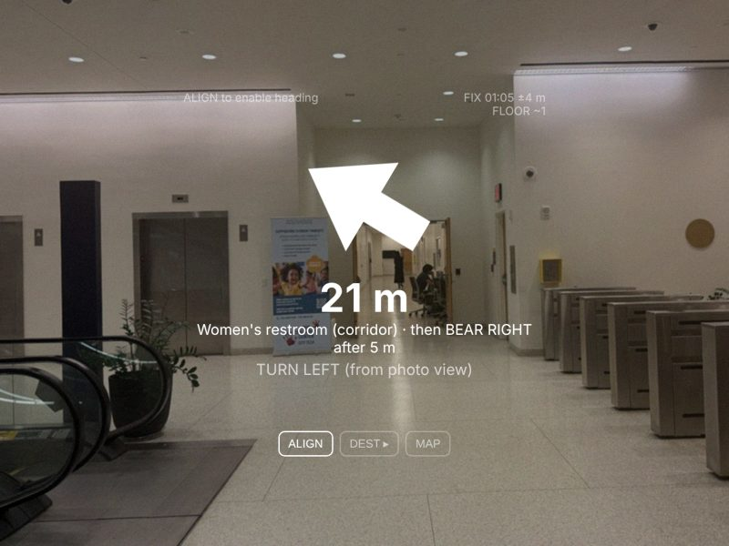
Leg 1 · at S2 Information desk / turnstiles · 1 photo(s) with no match first
Fix: 0 m off, heading +8°, 61 points, confidence high, 2876 ms
Route (21 m): BEAR LEFT 5 m → BEAR RIGHT 15 m
First arrow matches the true pose.
#2 · A 105 north-west corner (windows) → Exit Stair E (by corridor doors) PASS

Leg 1 · at S7 A 105 north-west corner (windows)
Fix: 0 m off, heading -1°, 87 points, confidence high, 2128 ms
Route (13 m): LEFT 13 m → THROUGH DOOR A 105 (NORTH), THEN SHOOT AGAIN
First arrow matches the true pose.
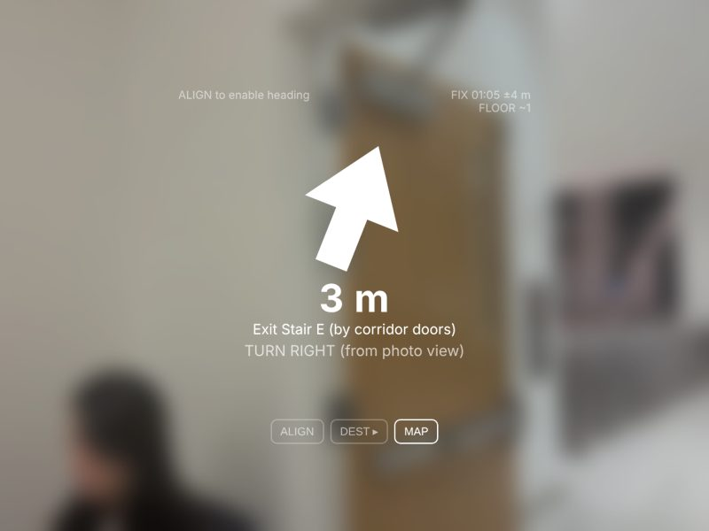
Leg 2 · at S5 Corridor outside A 105
Fix: 0 m off, heading -4°, 93 points, confidence high, 2309 ms
Route (3 m): AHEAD 3 m
First arrow matches the true pose.
#3 · A 105 south-east corner (south door) → A 106 FAIL
no surveyed station on the far side of Door A 105 (south)

Leg 1 · at S9 A 105 south-east corner (south door)
Fix: 0 m off, heading -6°, 32 points, confidence high, 955 ms
Route (3 m): RIGHT 3 m → THROUGH DOOR A 105 (SOUTH), THEN SHOOT AGAIN
First arrow: RIGHT. From the true pose it would be: BEAR RIGHT.
#4 · A 105 south-east corner (south door) → Exit: Main Entrance (Jay St) PASS
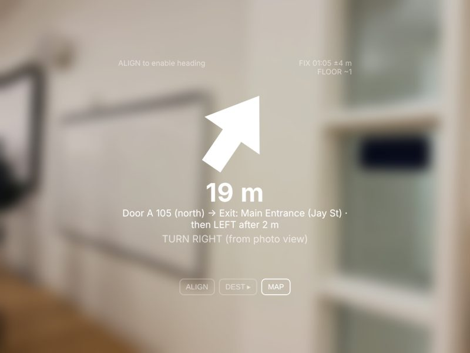
Leg 1 · at S9 A 105 south-east corner (south door) · 1 photo(s) with no match first
Fix: 0 m off, heading -2°, 29 points, confidence high, 1275 ms
Route (19 m): BEAR RIGHT 2 m → LEFT 17 m → THROUGH DOOR A 105 (NORTH), THEN SHOOT AGAIN
First arrow matches the true pose.

Leg 2 · at S5 Corridor outside A 105
Fix: 0 m off, heading +2°, 73 points, confidence high, 2630 ms
Route (20 m): RIGHT 6 m → LEFT 14 m
First arrow matches the true pose.
#5 · Atrium (Jay St glass, theater shell) → Exit: Main Entrance (Jay St) PASS

Leg 1 · at S1 Atrium (Jay St glass, theater shell)
Fix: 0 m off, heading -24°, 11 points, confidence low, 1863 ms
Route (25 m): RIGHT 19 m → RIGHT 6 m
First arrow matches the true pose.
#6 · A 105 south-east corner (south door) → NEAREST EXIT REACHED, an arrow was off

Leg 1 · at S9 A 105 south-east corner (south door)
Fix: 0 m off, heading -2°, 57 points, confidence high, 2618 ms
Route (19 m): RIGHT 2 m → LEFT 17 m → THROUGH DOOR A 105 (NORTH), THEN SHOOT AGAIN
First arrow matches the true pose.
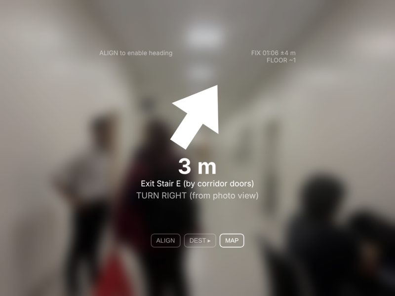
Leg 2 · at S5 Corridor outside A 105 · 1 photo(s) with no match first
Fix: 5 m off, heading +5°, 22 points, confidence medium, 2721 ms
Route (3 m): BEAR RIGHT 3 m
First arrow: BEAR RIGHT. From the true pose it would be: TURN AROUND.
#7 · Atrium (Jay St glass, theater shell) → South cabinets PASS
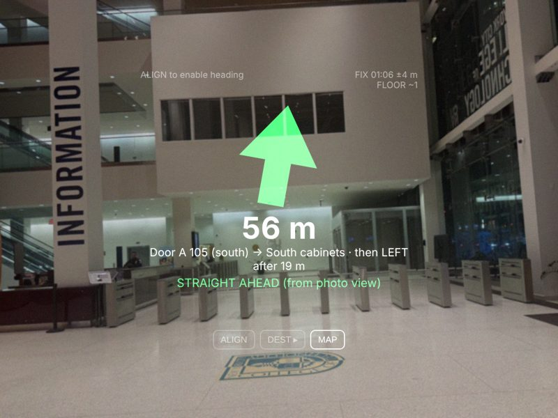
Leg 1 · at S1 Atrium (Jay St glass, theater shell)
Fix: 0 m off, heading +3°, 230 points, confidence high, 2640 ms
Route (56 m): AHEAD 19 m → LEFT 9 m → RIGHT 25 m → RIGHT 2 m → THROUGH DOOR A 105 (SOUTH), THEN SHOOT AGAIN
First arrow matches the true pose.
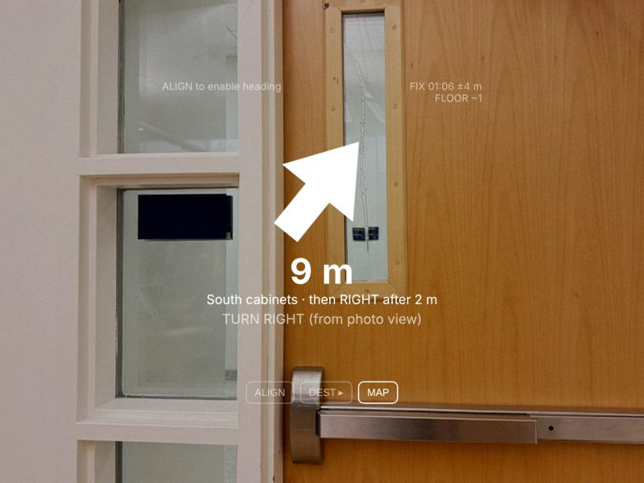
Leg 2 · at S9 A 105 south-east corner (south door) · 1 photo(s) with no match first
Fix: 0 m off, heading +3°, 34 points, confidence high, 1259 ms
Route (9 m): BEAR RIGHT 2 m → RIGHT 7 m
First arrow matches the true pose.
#8 · A 105 north-east corner (north door) → Whiteboards (front) PASS
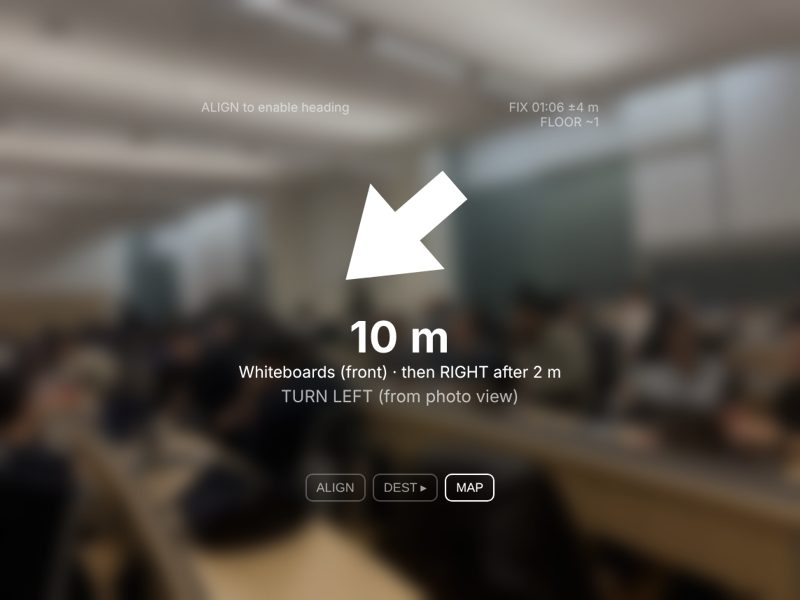
Leg 1 · at S6 A 105 north-east corner (north door)
Fix: 0 m off, heading +2°, 73 points, confidence high, 2708 ms
Route (10 m): LEFT 2 m → RIGHT 8 m
First arrow matches the true pose.
#9 · Behind the escalators / Elevator Bank B → Escalator to 2nd floor PASS
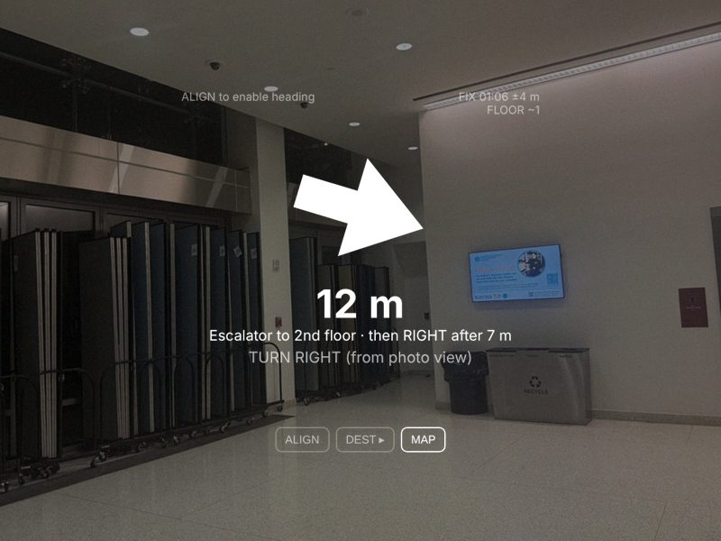
Leg 1 · at S3 Behind the escalators / Elevator Bank B
Fix: 0 m off, heading -3°, 36 points, confidence high, 1849 ms
Route (12 m): RIGHT 7 m → RIGHT 5 m
First arrow matches the true pose.
#10 · A 105 south-east corner (south door) → NEAREST EXIT PASS

Leg 1 · at S9 A 105 south-east corner (south door)
Fix: 0 m off, heading +3°, 45 points, confidence high, 2896 ms
Route (19 m): RIGHT 2 m → LEFT 17 m → THROUGH DOOR A 105 (NORTH), THEN SHOOT AGAIN
First arrow matches the true pose.
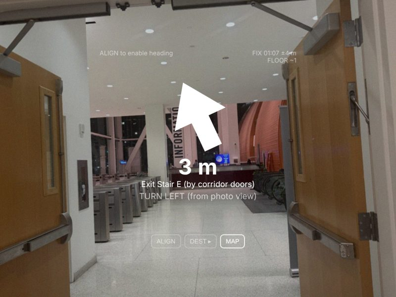
Leg 2 · at S5 Corridor outside A 105 · 2 photo(s) with no match first
Fix: 0 m off, heading +5°, 138 points, confidence medium, 3034 ms
Route (3 m): AHEAD 3 m
First arrow matches the true pose.
#11 · Behind the escalators / Elevator Bank B → Women's restroom (corridor) PASS

Leg 1 · at S3 Behind the escalators / Elevator Bank B
Fix: 0 m off, heading -5°, 33 points, confidence high, 2067 ms
Route (28 m): RIGHT 8 m → AHEAD 10 m → LEFT 10 m
First arrow matches the true pose.
#12 · Corridor outside A 105 → Elevator Bank B PASS

Leg 1 · at S5 Corridor outside A 105
Fix: 0 m off, heading +4°, 58 points, confidence high, 2921 ms
Route (20 m): RIGHT 6 m → RIGHT 10 m → RIGHT 5 m
First arrow matches the true pose.
#13 · Information desk / turnstiles → Exit Stair E (by corridor doors) PASS

Leg 1 · at S2 Information desk / turnstiles
Fix: 0 m off, heading +7°, 67 points, confidence high, 3114 ms
Route (13 m): LEFT 5 m → RIGHT 8 m
First arrow matches the true pose.
#14 · Corridor doors / Exit Stair E → Exit: Main Entrance (Jay St) REACHED, an arrow was off
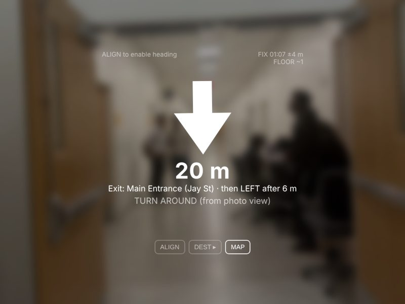
Leg 1 · at S4 Corridor doors / Exit Stair E
Fix: 5 m off, heading -5°, 22 points, confidence medium, 2592 ms
Route (20 m): TURN AROUND 6 m → LEFT 14 m
First arrow: TURN AROUND. From the true pose it would be: RIGHT.
#15 · A 105 north-east corner (north door) → Theater (orchestra) REACHED, an arrow was off
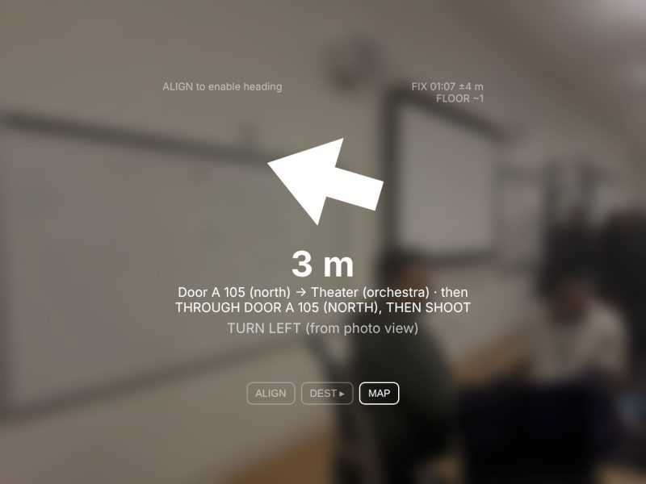
Leg 1 · at S6 A 105 north-east corner (north door)
Fix: 0 m off, heading +0°, 28 points, confidence high, 2040 ms
Route (3 m): LEFT 3 m → THROUGH DOOR A 105 (NORTH), THEN SHOOT AGAIN
First arrow matches the true pose.
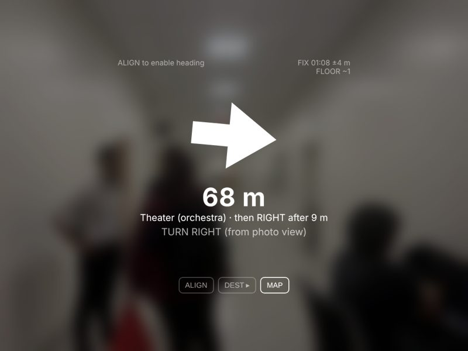
Leg 2 · at S5 Corridor outside A 105
Fix: 5 m off, heading +5°, 26 points, confidence high, 2621 ms
Route (68 m): RIGHT 9 m → RIGHT 34 m → RIGHT 25 m
First arrow: RIGHT. From the true pose it would be: TURN AROUND.
#16 · A 105 north-west corner (windows) → Women's restroom (corridor) PASS
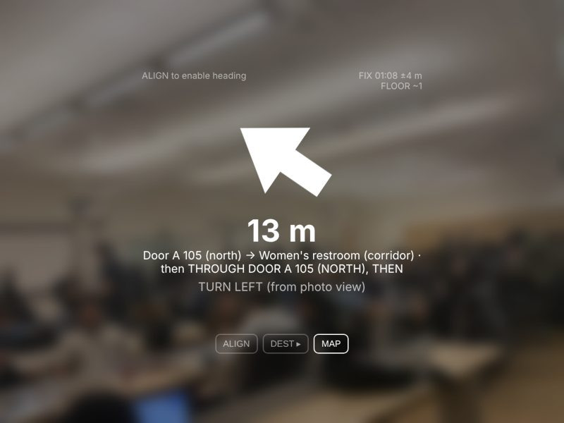
Leg 1 · at S7 A 105 north-west corner (windows) · 1 photo(s) with no match first
Fix: 0 m off, heading -2°, 41 points, confidence high, 2464 ms
Route (13 m): BEAR LEFT 13 m → THROUGH DOOR A 105 (NORTH), THEN SHOOT AGAIN
First arrow matches the true pose.
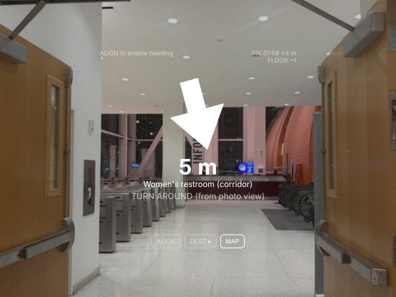
Leg 2 · at S5 Corridor outside A 105 · 1 photo(s) with no match first
Fix: 0 m off, heading +8°, 117 points, confidence low, 2465 ms
Route (5 m): TURN AROUND 5 m
First arrow matches the true pose.
#17 · A 105 south-east corner (south door) → NEAREST EXIT REACHED, an arrow was off

Leg 1 · at S9 A 105 south-east corner (south door) · 1 photo(s) with no match first
Fix: 0 m off, heading -6°, 13 points, confidence low, 2847 ms
Route (19 m): TURN AROUND 2 m → LEFT 17 m → THROUGH DOOR A 105 (NORTH), THEN SHOOT AGAIN
First arrow matches the true pose.

Leg 2 · at S5 Corridor outside A 105 · 1 photo(s) with no match first
Fix: 5 m off, heading +6°, 22 points, confidence medium, 2537 ms
Route (3 m): AHEAD 3 m
First arrow: AHEAD. From the true pose it would be: TURN AROUND.
#18 · Corridor outside A 105 → Women's restroom (corridor) PASS
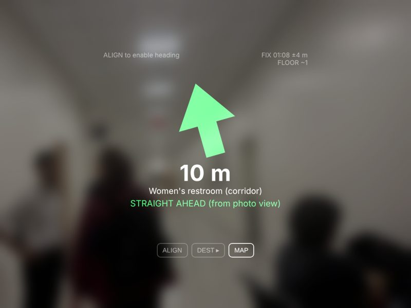
Leg 1 · at S5 Corridor outside A 105
Fix: 5 m off, heading +6°, 20 points, confidence medium, 2261 ms
Route (10 m): AHEAD 10 m
First arrow matches the true pose.
#19 · A 105 north-west corner (windows) → Courtyard doors REACHED, an arrow was off

Leg 1 · at S7 A 105 north-west corner (windows)
Fix: 0 m off, heading -13°, 24 points, confidence medium, 3050 ms
Route (13 m): AHEAD 13 m → THROUGH DOOR A 105 (NORTH), THEN SHOOT AGAIN
First arrow matches the true pose.
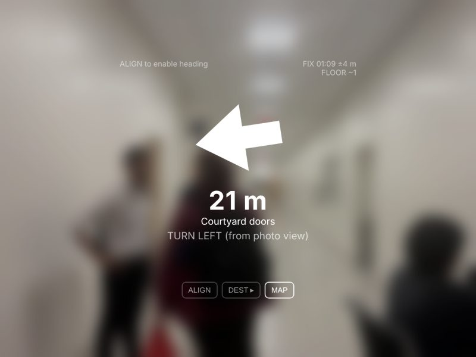
Leg 2 · at S5 Corridor outside A 105
Fix: 5 m off, heading +5°, 24 points, confidence medium, 2633 ms
Route (21 m): LEFT 21 m
First arrow: LEFT. From the true pose it would be: TURN AROUND.
#20 · A 105 north-east corner (north door) → South cabinets PASS
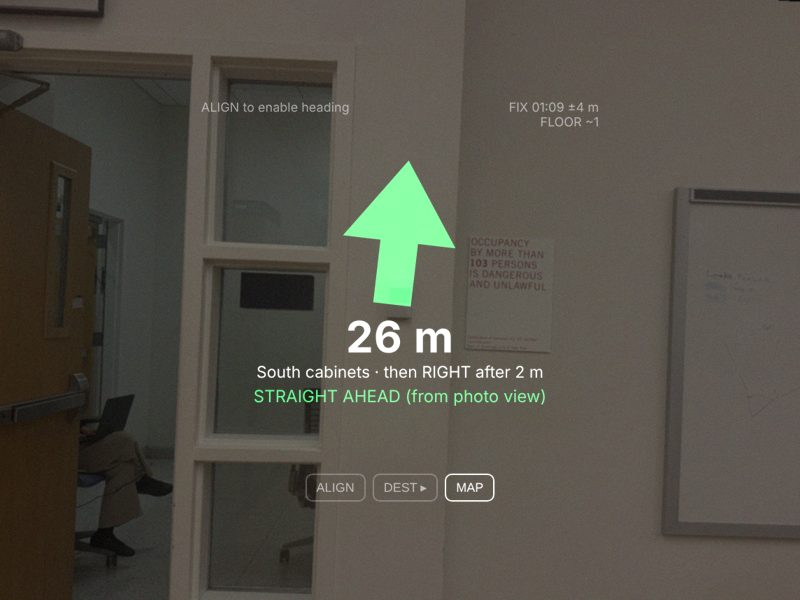
Leg 1 · at S6 A 105 north-east corner (north door)
Fix: 0 m off, heading +3°, 60 points, confidence high, 854 ms
Route (26 m): AHEAD 2 m → RIGHT 18 m → RIGHT 7 m
First arrow matches the true pose.